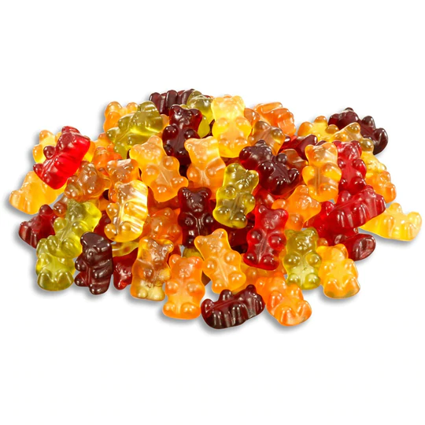
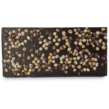
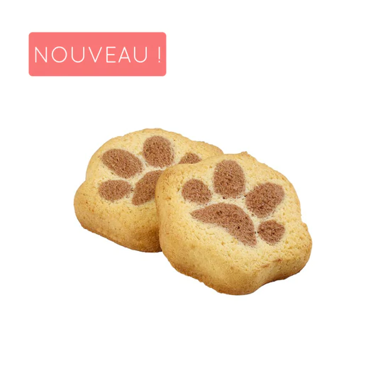

Petits plaisir sucrés

Oursons au jus de fruits avec de la gélatine - au goût fruité : pomme, citron, orange, framboise, ananas, cassis.

La gamme de chocolats NAO est simple et savoureuse. Tous leurs produits sont fabriqués de manière artisanale. Grâce au savoir-faire de leur chocolatier, NAO vous propose d’excellents chocolats.

La papatte, le biscuit qui fait craquer les parents et les enfants ! Une forme mignonne et unique, un goût rond de banane et de cacao et la taille parfaite pour le goûter des enfants !